В треугольнике $ABC$ угол $C$ равен $90^{\circ}$, $AB=30$, $\cos A=0{,}6$. Найдите $AC$.
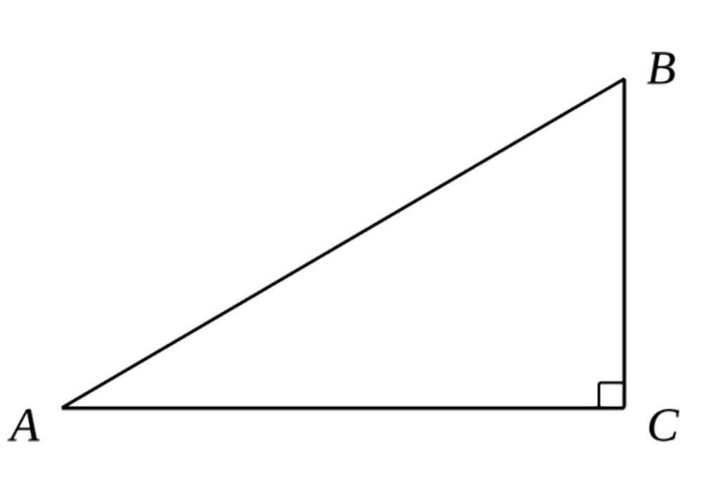
Свои задачи matbank по типам заданий ФИПИ, ответы проверены. Номера задач постоянные — их можно задавать, например: «аналоги к № 1: 2, 5, 11».
В треугольнике $ABC$ угол $C$ равен $90^{\circ}$, $AB=30$, $\cos A=0{,}6$. Найдите $AC$.

В равнобедренном треугольнике $ABC$ с основанием $AC$ внешний угол при вершине $C$ равен $166^{\circ}$. Найдите величину угла $ABC$. Ответ дайте в градусах.
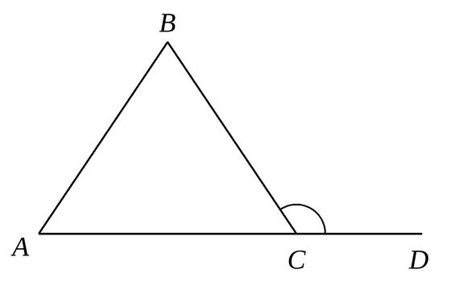
Один угол параллелограмма больше другого на $46^{\circ}$. Найдите больший угол параллелограмма. Ответ дайте в градусах.
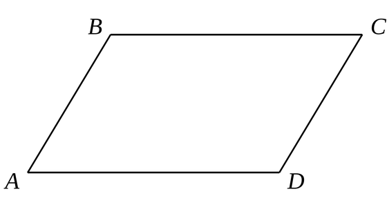
Средняя линия трапеции равна $3{,}5$, а меньшее основание равно $3$. Найдите большее основание трапеции.
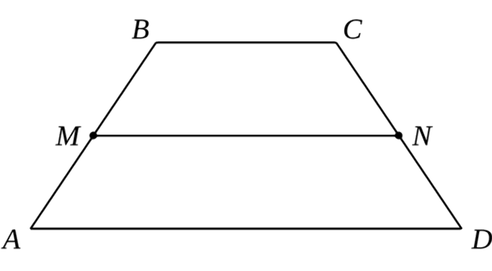
Вписанный угол опирается на дугу, градусная мера которой равна $142^{\circ}$. Найдите этот угол. Ответ дайте в градусах.
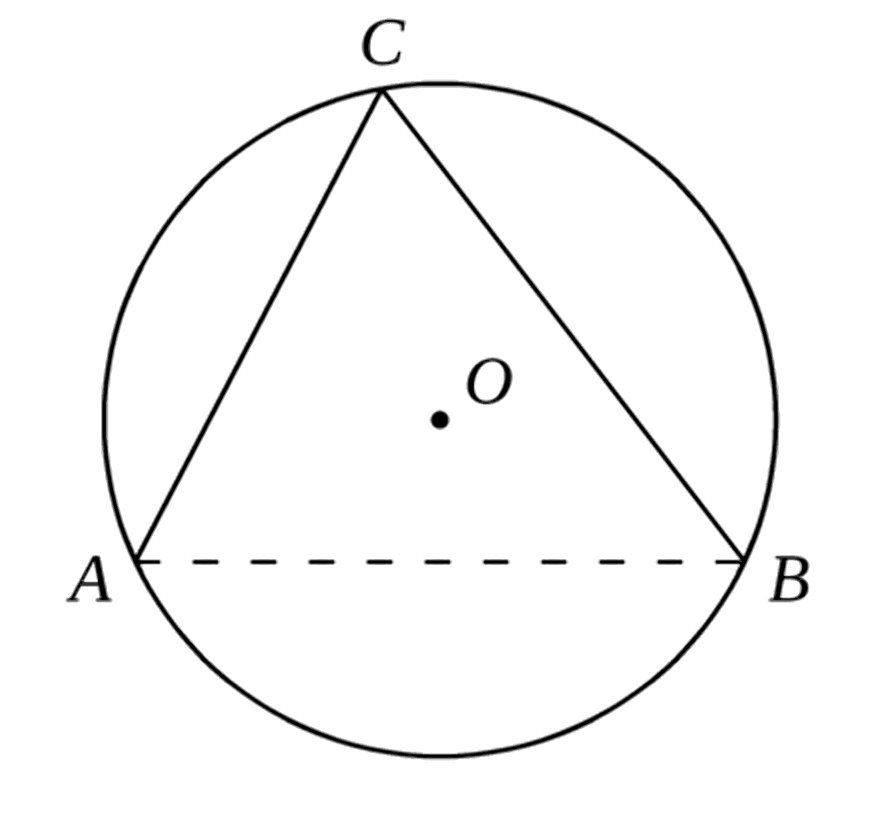
Диагонали ромба равны $36$ и $48$. Найдите площадь ромба.
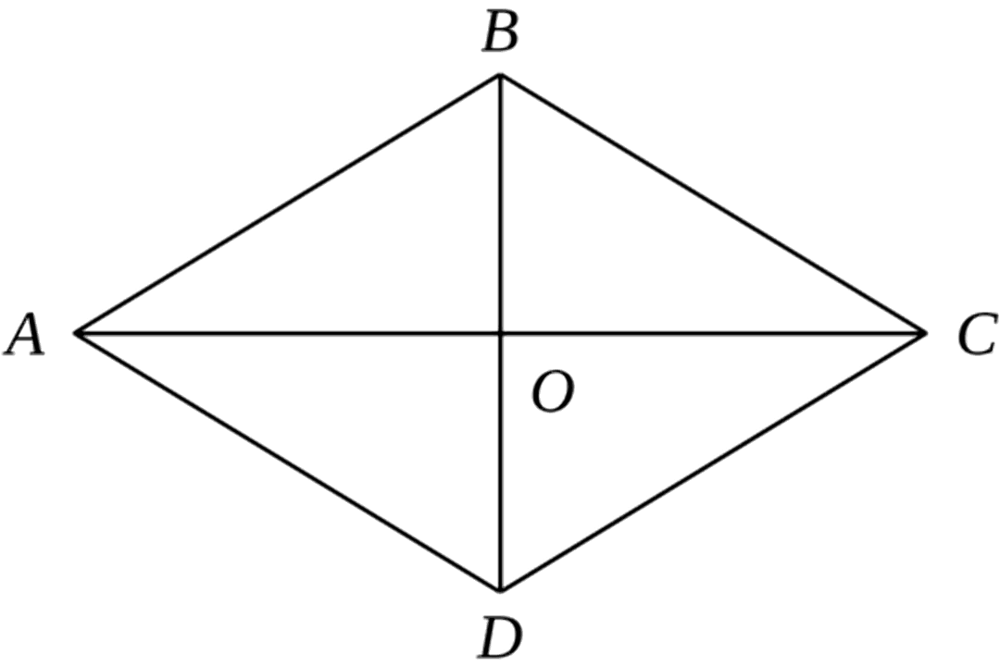
В треугольнике $ABC$ угол $C$ равен $90^{\circ}$, $AB=5$, $\sin A=0{,}8$. Найдите $BC$.
В равнобедренном треугольнике $ABC$ с основанием $AC$ внешний угол при вершине $C$ равен $162^{\circ}$. Найдите величину угла $ABC$. Ответ дайте в градусах.
Один угол параллелограмма больше другого на $142^{\circ}$. Найдите больший угол параллелограмма. Ответ дайте в градусах.
Основания трапеции равны $37$ и $9$. Найдите среднюю линию этой трапеции.
Вписанный угол опирается на дугу, градусная мера которой равна $168^{\circ}$. Найдите этот угол. Ответ дайте в градусах.
Диагонали ромба равны $32$ и $60$. Найдите площадь ромба.
В треугольнике $ABC$ угол $C$ равен $90^{\circ}$, $AB=10$, $\sin A=0{,}6$. Найдите $BC$.
В равнобедренном треугольнике $ABC$ с основанием $AC$ внешний угол при вершине $C$ равен $98^{\circ}$. Найдите величину угла $ABC$. Ответ дайте в градусах.
Один угол параллелограмма больше другого на $118^{\circ}$. Найдите больший угол параллелограмма. Ответ дайте в градусах.
Средняя линия трапеции равна $29$, а меньшее основание равно $22$. Найдите большее основание трапеции.
Чему равен острый вписанный угол, опирающийся на хорду, равную радиусу окружности? Ответ дайте в градусах.
Диагонали ромба равны $20$ и $48$. Найдите сторону ромба.
В треугольнике $ABC$ угол $C$ равен $90^{\circ}$, $AB=51$, $\sin A=\frac{8}{17}$. Найдите $BC$.
В равнобедренном треугольнике $ABC$ с основанием $AC$ внешний угол при вершине $C$ равен $124^{\circ}$. Найдите величину угла $ABC$. Ответ дайте в градусах.
Один угол параллелограмма больше другого на $68^{\circ}$. Найдите больший угол параллелограмма. Ответ дайте в градусах.
Средняя линия трапеции равна $14$, а меньшее основание равно $8$. Найдите большее основание трапеции.
Центральный угол на $84^{\circ}$ больше острого вписанного угла, опирающегося на ту же дугу окружности. Найдите вписанный угол. Ответ дайте в градусах.
Диагонали ромба равны $16$ и $30$. Найдите сторону ромба.
В треугольнике $ABC$ угол $C$ равен $90^{\circ}$, $AB=26$, $\cos A=\frac{5}{13}$. Найдите $AC$.
В равнобедренном треугольнике $ABC$ с основанием $AC$ внешний угол при вершине $C$ равен $156^{\circ}$. Найдите величину угла $ABC$. Ответ дайте в градусах.
Один угол параллелограмма больше другого на $52^{\circ}$. Найдите больший угол параллелограмма. Ответ дайте в градусах.
Основания трапеции равны $20$ и $27$. Найдите среднюю линию этой трапеции.
Вписанный угол опирается на дугу, градусная мера которой равна $102^{\circ}$. Найдите этот угол. Ответ дайте в градусах.
Диагонали ромба равны $16$ и $12$. Найдите сторону ромба.
В треугольнике $ABC$ угол $C$ равен $90^{\circ}$, $AB=13$, $\cos A=\frac{12}{13}$. Найдите $AC$.
В равнобедренном треугольнике $ABC$ с основанием $AC$ внешний угол при вершине $C$ равен $138^{\circ}$. Найдите величину угла $ABC$. Ответ дайте в градусах.
Один угол параллелограмма больше другого на $60^{\circ}$. Найдите больший угол параллелограмма. Ответ дайте в градусах.
Основания трапеции равны $18$ и $24$. Найдите среднюю линию этой трапеции.
Центральный угол на $81^{\circ}$ больше острого вписанного угла, опирающегося на ту же дугу окружности. Найдите вписанный угол. Ответ дайте в градусах.
Диагонали ромба равны $24$ и $10$. Найдите площадь ромба.
В треугольнике $ABC$ угол $C$ равен $90^{\circ}$, $AB=10$, $\cos A=0{,}8$. Найдите $AC$.
В равнобедренном треугольнике $ABC$ с основанием $AC$ внешний угол при вершине $C$ равен $160^{\circ}$. Найдите величину угла $ABC$. Ответ дайте в градусах.
Один угол параллелограмма больше другого на $130^{\circ}$. Найдите больший угол параллелограмма. Ответ дайте в градусах.
Основания трапеции равны $32$ и $26$. Найдите среднюю линию этой трапеции.
Центральный угол на $76^{\circ}$ больше острого вписанного угла, опирающегося на ту же дугу окружности. Найдите вписанный угол. Ответ дайте в градусах.
Диагонали ромба равны $12$ и $16$. Найдите сторону ромба.
В треугольнике $ABC$ угол $C$ равен $90^{\circ}$, $AB=17$, $\sin A=\frac{8}{17}$. Найдите $BC$.
В равнобедренном треугольнике $ABC$ с основанием $AC$ внешний угол при вершине $C$ равен $112^{\circ}$. Найдите величину угла $ABC$. Ответ дайте в градусах.
Один угол параллелограмма больше другого на $42^{\circ}$. Найдите больший угол параллелограмма. Ответ дайте в градусах.
Основания трапеции равны $6$ и $32$. Найдите среднюю линию этой трапеции.
Центральный угол на $47^{\circ}$ больше острого вписанного угла, опирающегося на ту же дугу окружности. Найдите вписанный угол. Ответ дайте в градусах.
Диагонали ромба равны $18$ и $24$. Найдите сторону ромба.
В треугольнике $ABC$ угол $C$ равен $90^{\circ}$, $AB=17$, $\cos A=\frac{15}{17}$. Найдите $AC$.
В равнобедренном треугольнике $ABC$ с основанием $AC$ внешний угол при вершине $C$ равен $147^{\circ}$. Найдите величину угла $ABC$. Ответ дайте в градусах.
Один угол параллелограмма больше другого на $50^{\circ}$. Найдите больший угол параллелограмма. Ответ дайте в градусах.
Основания трапеции равны $30$ и $37$. Найдите среднюю линию этой трапеции.
Центральный угол на $26^{\circ}$ больше острого вписанного угла, опирающегося на ту же дугу окружности. Найдите вписанный угол. Ответ дайте в градусах.
Диагонали ромба равны $32$ и $24$. Найдите сторону ромба.
В треугольнике $ABC$ угол $C$ равен $90^{\circ}$, $AB=20$, $\cos A=0{,}6$. Найдите $AC$.
В равнобедренном треугольнике $ABC$ с основанием $AC$ внешний угол при вершине $C$ равен $157^{\circ}$. Найдите величину угла $ABC$. Ответ дайте в градусах.
Один угол параллелограмма больше другого на $66^{\circ}$. Найдите больший угол параллелограмма. Ответ дайте в градусах.
Средняя линия трапеции равна $21$, а меньшее основание равно $12$. Найдите большее основание трапеции.
Центральный угол на $32^{\circ}$ больше острого вписанного угла, опирающегося на ту же дугу окружности. Найдите вписанный угол. Ответ дайте в градусах.
Диагонали ромба равны $8$ и $6$. Найдите площадь ромба.
В треугольнике $ABC$ сторона $AB$ равна $29\sqrt{2}$, угол $C$ равен $135^\circ$. Найдите радиус описанной около этого треугольника окружности.

В треугольнике $ABC$ стороны $AC$ и $BC$ равны. Внешний угол при вершине $B$ равен $134^\circ$. Найдите угол $C$. Ответ дайте в градусах.

В треугольнике $ABC$ угол $C$ равен $78^\circ$, $AD$ — биссектриса, угол $CAD$ равен $26^\circ$. Найдите величину угла $ADB$. Ответ дайте в градусах.

В треугольнике $ABC$ угол $C$ равен $90^\circ$, $AB=25$, $AC=\sqrt{481}$. Найдите $\sin A$.

В четырёхугольник $ABCD$ вписана окружность, $AB=9$, $BC=10$, $CD=11$. Найдите длину четвёртой стороны четырёхугольника.

Два угла вписанного в окружность четырёхугольника равны $49^\circ$ и $61^\circ$. Найдите больший из оставшихся углов. Ответ дайте в градусах.
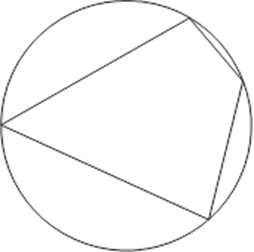
Две стороны треугольника равны $11$ и $22$. Высота, опущенная на большую из этих сторон, равна $4$. Найдите длину высоты, опущенной на меньшую из этих сторон треугольника.
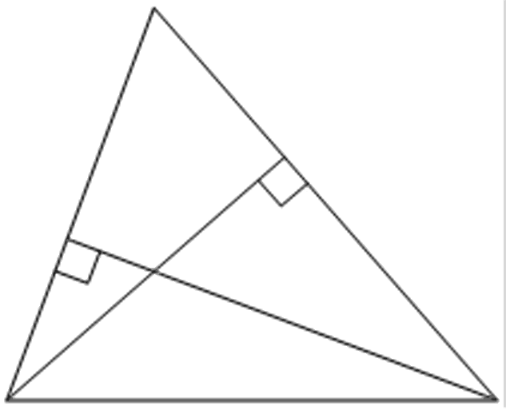
Найдите величину угла $ACO$, если его сторона $CA$ касается окружности с центром $O$, отрезок $CO$ пересекает окружность в точке $B$ (см. рисунок), а дуга $AB$ окружности, заключённая внутри этого угла, равна $49^\circ$. Ответ дайте в градусах.
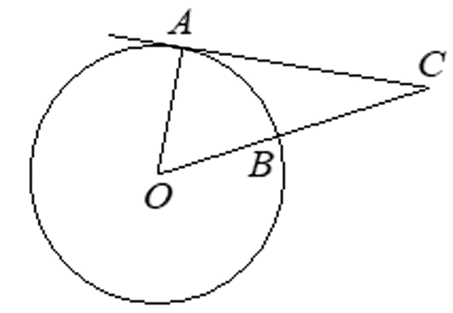
Найдите центральный угол, если он на $52^\circ$ больше острого вписанного угла, опирающегося на ту же дугу. Ответ дайте в градусах.

Острый угол $B$ прямоугольного треугольника $ABC$ равен $44^\circ$. Найдите величину угла между высотой $CH$ и биссектрисой $CD$, проведёнными из вершины прямого угла $C$. Ответ дайте в градусах.
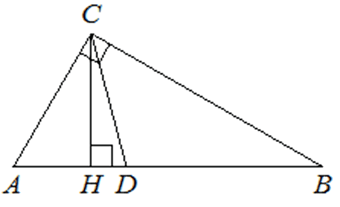
Отрезки $AC$ и $BD$ — диаметры окружности с центром $O$. Угол $ACB$ равен $45^\circ$. Найдите угол $AOD$. Ответ дайте в градусах.

Площадь треугольника $ABC$ равна $40$, $DE$ — средняя линия, параллельная стороне $AB$. Найдите площадь трапеции $ABED$.
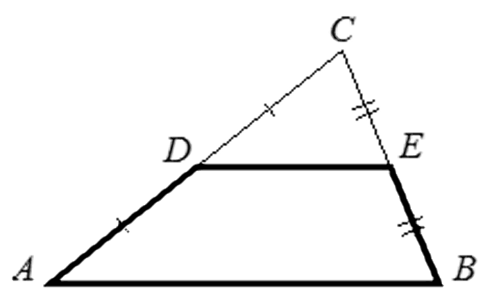
Четырёхугольник $ABCD$ вписан в окружность. Угол $ABD$ равен $41^\circ$, угол $CAD$ равен $27^\circ$. Найдите угол $ABC$. Ответ дайте в градусах.

В треугольнике $ABC$ сторона $AB$ равна $26$, угол $C$ равен $30^\circ$. Найдите радиус описанной около этого треугольника окружности.
В треугольнике $ABC$ стороны $AC$ и $BC$ равны, угол $C$ равен $96^\circ$, угол $CBD$ внешний. Найдите величину угла $CBD$. Ответ дайте в градусах.

В треугольнике $ABC$ угол $C$ равен $31^\circ$, $AD$ — биссектриса, угол $CAD$ равен $17^\circ$. Найдите величину угла $ADB$. Ответ дайте в градусах.
В треугольнике $ABC$ угол $C$ равен $90^\circ$, $AB=20$, $BC=\sqrt{231}$. Найдите $\cos A$.
В четырёхугольник $ABCD$ вписана окружность, $AB=13$, $CD=13$. Найдите периметр четырёхугольника $ABCD$.
Два угла вписанного в окружность четырёхугольника равны $46^\circ$ и $61^\circ$. Найдите больший из оставшихся углов. Ответ дайте в градусах.
Две стороны треугольника равны $10$ и $18$. Высота, опущенная на большую из этих сторон, равна $5$. Найдите длину высоты, опущенной на меньшую из этих сторон треугольника.
Угол $ACO$ равен $63^\circ$. Его сторона $CA$ касается окружности с центром в точке $O$. Отрезок $CO$ пересекает окружность в точке $B$ (см. рисунок). Найдите градусную меру дуги $AB$ окружности, заключённой внутри этого угла. Ответ дайте в градусах.

Найдите центральный угол, если он на $58^\circ$ больше острого вписанного угла, опирающегося на ту же дугу. Ответ дайте в градусах.
Острый угол $B$ прямоугольного треугольника $ABC$ равен $78^\circ$. Найдите величину угла между высотой $CH$ и биссектрисой $CD$, проведёнными из вершины прямого угла $C$. Ответ дайте в градусах.
Отрезки $AC$ и $BD$ — диаметры окружности с центром $O$. Угол $ACB$ равен $59^\circ$. Найдите угол $AOD$. Ответ дайте в градусах.
Площадь параллелограмма $ABCD$ равна $16$. Точка $E$ — середина стороны $AD$. Найдите площадь трапеции $BCDE$.
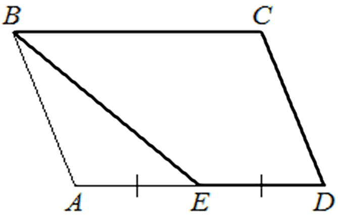
Четырёхугольник $ABCD$ вписан в окружность. Угол $ABC$ равен $104^\circ$, угол $CAD$ равен $55^\circ$. Найдите угол $ABD$. Ответ дайте в градусах.

В треугольнике $ABC$ сторона $AB$ равна $14$, угол $C$ равен $30^\circ$. Найдите радиус описанной около этого треугольника окружности.
В треугольнике $ABC$ стороны $AC$ и $BC$ равны, угол $C$ равен $168^\circ$, угол $CBD$ внешний. Найдите величину угла $CBD$. Ответ дайте в градусах.
В треугольнике $ABC$ угол $C$ равен $63^\circ$, $AD$ — биссектриса, угол $BAD$ равен $37^\circ$. Найдите величину угла $ABD$. Ответ дайте в градусах.
В треугольнике $ABC$ угол $C$ равен $90^\circ$, $AB=25$, $BC=\sqrt{561}$. Найдите $\cos A$.
В четырёхугольник $ABCD$, периметр которого равен $56$, вписана окружность, $AB=15$. Найдите длину стороны $CD$.
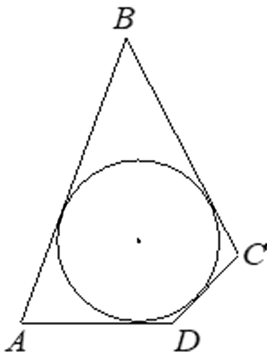
Два угла вписанного в окружность четырёхугольника равны $85^\circ$ и $109^\circ$. Найдите больший из оставшихся углов. Ответ дайте в градусах.
Две стороны треугольника равны $6$ и $15$. Высота, опущенная на большую из этих сторон, равна $4$. Найдите длину высоты, опущенной на меньшую из этих сторон треугольника.
Найдите величину угла $ACO$, если его сторона $CA$ касается окружности с центром $O$, отрезок $CO$ пересекает окружность в точке $B$ (см. рисунок), а дуга $AB$ окружности, заключённая внутри этого угла, равна $64^\circ$. Ответ дайте в градусах.
Центральный угол на $17^\circ$ больше острого вписанного угла, опирающегося на ту же дугу окружности. Найдите вписанный угол. Ответ дайте в градусах.
Острый угол $B$ прямоугольного треугольника $ABC$ равен $52^\circ$. Найдите величину угла между биссектрисой $CD$ и медианой $CM$, проведёнными из вершины прямого угла $C$. Ответ дайте в градусах.
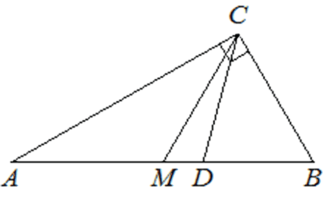
Отрезки $AC$ и $BD$ — диаметры окружности с центром $O$. Угол $AOD$ равен $20^\circ$. Найдите вписанный угол $ACB$. Ответ дайте в градусах.
Площадь параллелограмма $ABCD$ равна $88$. Точка $E$ — середина стороны $AD$. Найдите площадь трапеции $BCDE$.
Четырёхугольник $ABCD$ вписан в окружность. Угол $ABC$ равен $127^\circ$, угол $ABD$ равен $28^\circ$. Найдите угол $CAD$. Ответ дайте в градусах.
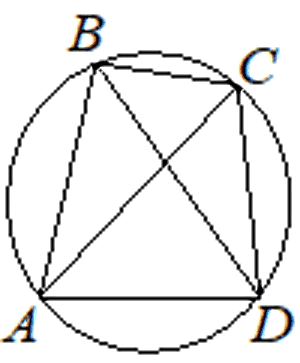
В треугольнике $ABC$ сторона $AB$ равна $20\sqrt{3}$, угол $C$ равен $60^\circ$. Найдите радиус описанной около этого треугольника окружности.
В треугольнике $ABC$ стороны $AC$ и $BC$ равны. Внешний угол при вершине $B$ равен $137^\circ$. Найдите угол $C$. Ответ дайте в градусах.
В треугольнике $ABC$ угол $C$ равен $54^\circ$, $AD$ — биссектриса, угол $CAD$ равен $38^\circ$. Найдите величину угла $ABD$. Ответ дайте в градусах.
В треугольнике $ABC$ угол $C$ равен $90^\circ$, $AB=25$, $AC=\sqrt{301}$. Найдите $\sin A$.
В четырёхугольник $ABCD$ вписана окружность, $AB=6$, $BC=9$, $CD=12$. Найдите длину четвёртой стороны четырёхугольника.
Два угла вписанного в окружность четырёхугольника равны $57^\circ$ и $132^\circ$. Найдите больший из оставшихся углов. Ответ дайте в градусах.
Стороны параллелограмма равны $12$ и $18$. Высота, опущенная на меньшую из этих сторон, равна $9$. Найдите длину высоты, опущенной на большую сторону параллелограмма.
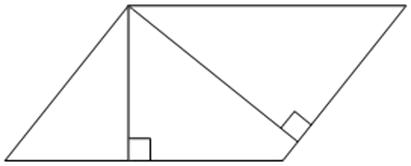
Найдите величину угла $ACO$, если его сторона $CA$ касается окружности с центром $O$, отрезок $CO$ пересекает окружность в точке $B$ (см. рисунок), а дуга $AB$ окружности, заключённая внутри этого угла, равна $81^\circ$. Ответ дайте в градусах.
Найдите центральный угол, если он на $36^\circ$ больше острого вписанного угла, опирающегося на ту же дугу. Ответ дайте в градусах.
Острый угол $B$ прямоугольного треугольника $ABC$ равен $17^\circ$. Найдите величину угла между биссектрисой $CD$ и медианой $CM$, проведёнными из вершины прямого угла $C$. Ответ дайте в градусах.
Отрезки $AC$ и $BD$ — диаметры окружности с центром $O$. Угол $AOD$ равен $154^\circ$. Найдите вписанный угол $ACB$. Ответ дайте в градусах.
Площадь треугольника $ABC$ равна $68$, $DE$ — средняя линия, параллельная стороне $AB$. Найдите площадь треугольника $CDE$.

Четырёхугольник $ABCD$ вписан в окружность. Угол $ABD$ равен $60^\circ$, угол $CAD$ равен $25^\circ$. Найдите угол $ABC$. Ответ дайте в градусах.
В треугольнике $ABC$ сторона $AB$ равна $18$, угол $C$ равен $150^\circ$. Найдите радиус описанной около этого треугольника окружности.
В треугольнике $ABC$ стороны $AC$ и $BC$ равны, угол $C$ равен $40^\circ$, угол $CBD$ внешний. Найдите величину угла $CBD$. Ответ дайте в градусах.
В треугольнике $ABC$ угол $C$ равен $33^\circ$, $AD$ — биссектриса, угол $BAD$ равен $36^\circ$. Найдите величину угла $B$. Ответ дайте в градусах.
В треугольнике $ABC$ угол $C$ равен $90^\circ$, $AB=10$, $AC=\sqrt{84}$. Найдите $\sin A$.
В четырёхугольник $ABCD$ вписана окружность, $AB=10$, $CD=5$. Найдите периметр четырёхугольника $ABCD$.
Два угла вписанного в окружность четырёхугольника равны $87^\circ$ и $122^\circ$. Найдите больший из оставшихся углов. Ответ дайте в градусах.
Стороны параллелограмма равны $18$ и $26$. Высота, опущенная на меньшую из этих сторон, равна $13$. Найдите длину высоты, опущенной на большую сторону параллелограмма.
Найдите величину угла $ACO$, если его сторона $CA$ касается окружности с центром $O$, отрезок $CO$ пересекает окружность в точке $B$ (см. рисунок), а дуга $AB$ окружности, заключённая внутри этого угла, равна $65^\circ$. Ответ дайте в градусах.
Найдите центральный угол, если он на $31^\circ$ больше острого вписанного угла, опирающегося на ту же дугу. Ответ дайте в градусах.
Острый угол $B$ прямоугольного треугольника $ABC$ равен $74^\circ$. Найдите величину угла между высотой $CH$ и медианой $CM$, проведёнными из вершины прямого угла $C$. Ответ дайте в градусах.
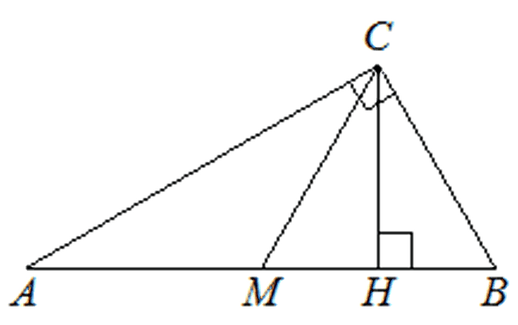
Отрезки $AC$ и $BD$ — диаметры окружности с центром $O$. Угол $ACB$ равен $30^\circ$. Найдите угол $AOD$. Ответ дайте в градусах.
Площадь треугольника $ABC$ равна $96$, $DE$ — средняя линия, параллельная стороне $AB$. Найдите площадь трапеции $ABED$.
Четырёхугольник $ABCD$ вписан в окружность. Угол $ABC$ равен $100^\circ$, угол $CAD$ равен $26^\circ$. Найдите угол $ABD$. Ответ дайте в градусах.
В треугольнике $ABC$ сторона $AB$ равна $16\sqrt{3}$, угол $C$ равен $120^\circ$. Найдите радиус описанной около этого треугольника окружности.
В треугольнике $ABC$ стороны $AC$ и $BC$ равны, угол $C$ равен $98^\circ$, угол $CBD$ внешний. Найдите величину угла $CBD$. Ответ дайте в градусах.
В треугольнике $ABC$ угол $C$ равен $48^\circ$, $AD$ — биссектриса, угол $BAD$ равен $25^\circ$. Найдите величину угла $ABD$. Ответ дайте в градусах.
В треугольнике $ABC$ угол $C$ равен $90^\circ$, $AB=10$, $BC=\sqrt{51}$. Найдите $\cos A$.
В четырёхугольник $ABCD$ вписана окружность, $AB=11$, $CD=18$. Найдите периметр четырёхугольника $ABCD$.
Два угла вписанного в окружность четырёхугольника равны $61^\circ$ и $102^\circ$. Найдите больший из оставшихся углов. Ответ дайте в градусах.
Две стороны треугольника равны $7$ и $21$. Высота, опущенная на большую из этих сторон, равна $1$. Найдите длину высоты, опущенной на меньшую из этих сторон треугольника.
Найдите величину угла $ACO$, если его сторона $CA$ касается окружности с центром $O$, отрезок $CO$ пересекает окружность в точке $B$ (см. рисунок), а дуга $AB$ окружности, заключённая внутри этого угла, равна $31^\circ$. Ответ дайте в градусах.
Центральный угол на $36^\circ$ больше острого вписанного угла, опирающегося на ту же дугу окружности. Найдите вписанный угол. Ответ дайте в градусах.
Острый угол $B$ прямоугольного треугольника $ABC$ равен $27^\circ$. Найдите величину угла между высотой $CH$ и медианой $CM$, проведёнными из вершины прямого угла $C$. Ответ дайте в градусах.
Отрезки $AC$ и $BD$ — диаметры окружности с центром $O$. Угол $ACB$ равен $40^\circ$. Найдите угол $AOD$. Ответ дайте в градусах.
Площадь треугольника $ABC$ равна $72$, $DE$ — средняя линия, параллельная стороне $AB$. Найдите площадь трапеции $ABED$.
Четырёхугольник $ABCD$ вписан в окружность. Угол $ABC$ равен $84^\circ$, угол $ABD$ равен $55^\circ$. Найдите угол $CAD$. Ответ дайте в градусах.
В треугольнике $ABC$ сторона $AB$ равна $14\sqrt{2}$, угол $C$ равен $135^\circ$. Найдите радиус описанной около этого треугольника окружности.
В треугольнике $ABC$ стороны $AC$ и $BC$ равны. Внешний угол при вершине $B$ равен $101^\circ$. Найдите угол $C$. Ответ дайте в градусах.
В треугольнике $ABC$ угол $C$ равен $42^\circ$, $AD$ — биссектриса, угол $CAD$ равен $24^\circ$. Найдите величину угла $ABD$. Ответ дайте в градусах.
В треугольнике $ABC$ угол $C$ равен $90^\circ$, $AB=10$, $BC=\sqrt{84}$. Найдите $\cos A$.
В четырёхугольник $ABCD$ вписана окружность, $AB=5$, $BC=9$, $CD=12$. Найдите длину четвёртой стороны четырёхугольника.
Два угла вписанного в окружность четырёхугольника равны $100^\circ$ и $139^\circ$. Найдите больший из оставшихся углов. Ответ дайте в градусах.
Стороны параллелограмма равны $24$ и $28$. Высота, опущенная на меньшую из этих сторон, равна $14$. Найдите длину высоты, опущенной на большую сторону параллелограмма.
Найдите величину угла $ACO$, если его сторона $CA$ касается окружности с центром $O$, отрезок $CO$ пересекает окружность в точке $B$ (см. рисунок), а дуга $AB$ окружности, заключённая внутри этого угла, равна $54^\circ$. Ответ дайте в градусах.
Центральный угол на $22^\circ$ больше острого вписанного угла, опирающегося на ту же дугу окружности. Найдите вписанный угол. Ответ дайте в градусах.
Острый угол $B$ прямоугольного треугольника $ABC$ равен $11^\circ$. Найдите величину угла между биссектрисой $CD$ и медианой $CM$, проведёнными из вершины прямого угла $C$. Ответ дайте в градусах.
Отрезки $AC$ и $BD$ — диаметры окружности с центром $O$. Угол $ACB$ равен $64^\circ$. Найдите угол $AOD$. Ответ дайте в градусах.
Площадь параллелограмма $ABCD$ равна $20$. Точка $E$ — середина стороны $AD$. Найдите площадь треугольника $ABE$.
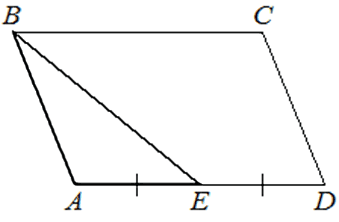
Четырёхугольник $ABCD$ вписан в окружность. Угол $ABC$ равен $74^\circ$, угол $ABD$ равен $58^\circ$. Найдите угол $CAD$. Ответ дайте в градусах.
В треугольнике $ABC$ сторона $AB$ равна $10$, угол $C$ равен $30^\circ$. Найдите радиус описанной около этого треугольника окружности.
В треугольнике $ABC$ стороны $AC$ и $BC$ равны, угол $C$ равен $4^\circ$, угол $CBD$ внешний. Найдите величину угла $CBD$. Ответ дайте в градусах.
В треугольнике $ABC$ угол $C$ равен $41^\circ$, $AD$ — биссектриса, угол $BAD$ равен $33^\circ$. Найдите величину угла $B$. Ответ дайте в градусах.
В треугольнике $ABC$ угол $C$ равен $90^\circ$, $AB=20$, $AC=\sqrt{399}$. Найдите $\sin A$.
В четырёхугольник $ABCD$ вписана окружность, $AB=11$, $BC=7$, $CD=17$. Найдите длину четвёртой стороны четырёхугольника.
Два угла вписанного в окружность четырёхугольника равны $60^\circ$ и $80^\circ$. Найдите больший из оставшихся углов. Ответ дайте в градусах.
Стороны параллелограмма равны $14$ и $18$. Высота, опущенная на меньшую из этих сторон, равна $9$. Найдите длину высоты, опущенной на большую сторону параллелограмма.
Угол $ACO$ равен $69^\circ$. Его сторона $CA$ касается окружности с центром в точке $O$. Отрезок $CO$ пересекает окружность в точке $B$ (см. рисунок). Найдите градусную меру дуги $AB$ окружности, заключённой внутри этого угла. Ответ дайте в градусах.
Найдите центральный угол, если он на $80^\circ$ больше острого вписанного угла, опирающегося на ту же дугу. Ответ дайте в градусах.
Острый угол $B$ прямоугольного треугольника $ABC$ равен $50^\circ$. Найдите величину угла между высотой $CH$ и биссектрисой $CD$, проведёнными из вершины прямого угла $C$. Ответ дайте в градусах.
Отрезки $AC$ и $BD$ — диаметры окружности с центром $O$. Угол $AOD$ равен $10^\circ$. Найдите вписанный угол $ACB$. Ответ дайте в градусах.
Площадь треугольника $ABC$ равна $20$, $DE$ — средняя линия, параллельная стороне $AB$. Найдите площадь треугольника $CDE$.
Четырёхугольник $ABCD$ вписан в окружность. Угол $ABD$ равен $48^\circ$, угол $CAD$ равен $25^\circ$. Найдите угол $ABC$. Ответ дайте в градусах.
В треугольнике $ABC$ сторона $AB$ равна $21\sqrt{3}$, угол $C$ равен $120^\circ$. Найдите радиус описанной около этого треугольника окружности.
В треугольнике $ABC$ стороны $AC$ и $BC$ равны, угол $C$ равен $136^\circ$, угол $CBD$ внешний. Найдите величину угла $CBD$. Ответ дайте в градусах.
В треугольнике $ABC$ угол $C$ равен $44^\circ$, $AD$ — биссектриса, угол $BAD$ равен $40^\circ$. Найдите величину угла $ADB$. Ответ дайте в градусах.
В треугольнике $ABC$ угол $C$ равен $90^\circ$, $AB=5$, $AC=\sqrt{21}$. Найдите $\sin A$.
В четырёхугольник $ABCD$ вписана окружность, $AB=13$, $CD=15$. Найдите периметр четырёхугольника $ABCD$.
Два угла вписанного в окружность четырёхугольника равны $80^\circ$ и $132^\circ$. Найдите больший из оставшихся углов. Ответ дайте в градусах.
Стороны параллелограмма равны $15$ и $18$. Высота, опущенная на меньшую из этих сторон, равна $12$. Найдите длину высоты, опущенной на большую сторону параллелограмма.
Найдите величину угла $ACO$, если его сторона $CA$ касается окружности с центром $O$, отрезок $CO$ пересекает окружность в точке $B$ (см. рисунок), а дуга $AB$ окружности, заключённая внутри этого угла, равна $50^\circ$. Ответ дайте в градусах.
Центральный угол на $66^\circ$ больше острого вписанного угла, опирающегося на ту же дугу окружности. Найдите вписанный угол. Ответ дайте в градусах.
Острый угол $B$ прямоугольного треугольника $ABC$ равен $42^\circ$. Найдите величину угла между высотой $CH$ и медианой $CM$, проведёнными из вершины прямого угла $C$. Ответ дайте в градусах.
Отрезки $AC$ и $BD$ — диаметры окружности с центром $O$. Угол $ACB$ равен $23^\circ$. Найдите угол $AOD$. Ответ дайте в градусах.
Площадь треугольника $ABC$ равна $20$, $DE$ — средняя линия, параллельная стороне $AB$. Найдите площадь трапеции $ABED$.
Четырёхугольник $ABCD$ вписан в окружность. Угол $ABC$ равен $114^\circ$, угол $CAD$ равен $59^\circ$. Найдите угол $ABD$. Ответ дайте в градусах.
В треугольнике $ABC$ сторона $AB$ равна $12$, угол $C$ равен $30^\circ$. Найдите радиус описанной около этого треугольника окружности.
В треугольнике $ABC$ стороны $AC$ и $BC$ равны, угол $C$ равен $120^\circ$, угол $CBD$ внешний. Найдите величину угла $CBD$. Ответ дайте в градусах.
В треугольнике $ABC$ угол $C$ равен $50^\circ$, $AD$ — биссектриса, угол $CAD$ равен $34^\circ$. Найдите величину угла $ABD$. Ответ дайте в градусах.
В треугольнике $ABC$ угол $C$ равен $90^\circ$, $AB=20$, $AC=\sqrt{351}$. Найдите $\sin A$.
В четырёхугольник $ABCD$, периметр которого равен $44$, вписана окружность, $AB=14$. Найдите длину стороны $CD$.
Два угла вписанного в окружность четырёхугольника равны $45^\circ$ и $74^\circ$. Найдите больший из оставшихся углов. Ответ дайте в градусах.
Две стороны треугольника равны $20$ и $22$. Высота, опущенная на большую из этих сторон, равна $10$. Найдите длину высоты, опущенной на меньшую из этих сторон треугольника.
Угол $ACO$ равен $51^\circ$. Его сторона $CA$ касается окружности с центром в точке $O$. Отрезок $CO$ пересекает окружность в точке $B$ (см. рисунок). Найдите градусную меру дуги $AB$ окружности, заключённой внутри этого угла. Ответ дайте в градусах.
Центральный угол на $71^\circ$ больше острого вписанного угла, опирающегося на ту же дугу окружности. Найдите вписанный угол. Ответ дайте в градусах.
Острый угол $B$ прямоугольного треугольника $ABC$ равен $72^\circ$. Найдите величину угла между высотой $CH$ и биссектрисой $CD$, проведёнными из вершины прямого угла $C$. Ответ дайте в градусах.
Отрезки $AC$ и $BD$ — диаметры окружности с центром $O$. Угол $AOD$ равен $40^\circ$. Найдите вписанный угол $ACB$. Ответ дайте в градусах.
Площадь параллелограмма $ABCD$ равна $116$. Точка $E$ — середина стороны $AD$. Найдите площадь треугольника $ABE$.
Четырёхугольник $ABCD$ вписан в окружность. Угол $ABC$ равен $101^\circ$, угол $ABD$ равен $64^\circ$. Найдите угол $CAD$. Ответ дайте в градусах.